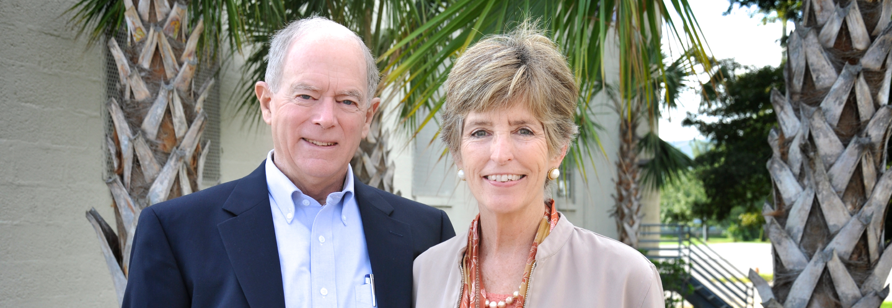

Jacob has partnered with Water Mission, a non-profit engineering organization that builds and implements safe water, sanitation, and hygiene solutions for people in developing countries and disaster areas. In 1998, the founders, Molly and George Greene, were operating an environmental engineering company in Charleston, South Carolina when they heard about the devastation in Honduras caused by Hurricane Mitch. After receiving a request for multiple water treatment systems in Honduras, and being unable to find existing systems that would work, George and his team of engineers took action to build such a system – and thus the idea for Water Missions International was born. When the Greene’s arrived in Honduras, they were shocked by what they found. The river that flowed through a nearby village was the color of chocolate milk, deep brown with toxins, bacteria and hopelessness. The residents of the village referred to it as the “River of Death” – no one survived once they drank from that river. As one of the newly built water systems became operational, the local villagers were still terrified to drink any water from the river – whether it was clear or not. So Molly and George placed their own lips to the hose and drank the newly purified water. With that action, Molly and George bridged the final gap and the villagers swarmed forward to drink the water. In the aftermath of their Honduras trip, Molly and George discovered the sad truth about the global water crisis – that billions are forced to drink dirty water every day. In 2001, the Greenes took action to combat this reality and founded Water Mission.

The planned route is from Washington State to Northeast Australia. As a direct route, the distance is 7,145 statute miles. Of course, the actual journey will be anything but direct. However, when the idea to row the Pacific was still just an idea, I thought I would start by looking at previous crossings to determine potential routes. By looking at what has already been accomplished, I got a better understanding of potential start-stop points, the required time, and typical departure time-frames. Information regarding the previous routes is courtesy of the Ocean Rowing Society Int.

If you are interested in donating, go to Jacob's website.